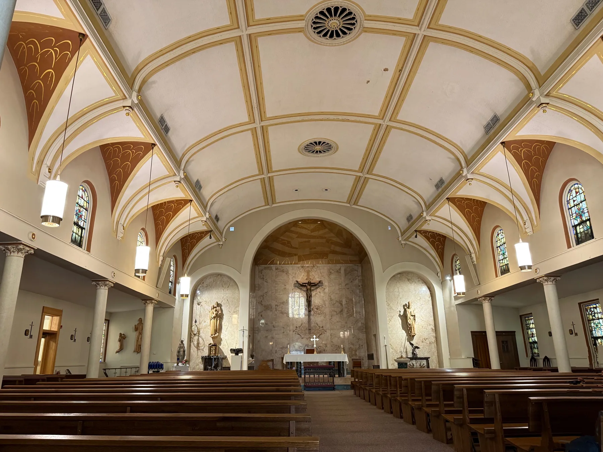

Special interests · Architecture
The grammar of a building
A building is an argument made in stone. Each of the great Western styles — Classical, Romanesque, Gothic, Renaissance, Baroque, and the revivals that came after — is a different theory of what a human being is and how that human should stand in the world.
An opening note
The reason it is worth learning the styles is not so you can name them on a walking tour. It is that each style is a snapshot of a moment when a civilization had a clear answer to the question, what does a wall mean? A Roman wall and a Gothic wall are not just made of different stones. They were built by people who disagreed, profoundly, about whether the human body or the human soul was the better unit of measurement for the world.
What follows is a tour through the major Western styles, grouped into four loose families — the Classical lineage, the Romanesque interlude, the Gothic ascent, and the Baroque counter-move — with the vernacular revivals that filtered all of it down into ordinary houses. I have tried to keep three threads going in each: the history, the motifs you can actually point at, and the underlying philosophy. Where I have a photograph that helps, I have pointed to the album in the library.
The Classical lineage
The Classical lineage is the long argument that began on a Greek hillside around 600 BC and never quite ended. Its premise is simple and audacious: the proportions of a beautiful building should be the proportions of a beautiful human body. Everything else — orders, pediments, the obsession with symmetry — follows from that.
Greek and Roman: the original grammar
The Greeks invented the three orders — Doric, Ionic, Corinthian — which are not so much three styles as three personalities. Doric is plain, masculine, soldierly; its capital is a simple cushion. Ionic is scholarly, with the famous spiralling volute. Corinthian is the youngest, the most ornate, with capitals carved into acanthus leaves. The Romans added two more — Tuscan and Composite — and then proceeded to use all five with cheerful disregard for the Greek ideal that each order had its proper structural role.
What the Romans contributed beyond the orders was the engineering that made bigness possible: the arch, the vault, and the dome. Concrete. The Pantheon's dome is the moment Roman architecture becomes a genuinely spatial art rather than a sculptural one. Until then, the Greek temple was a beautiful object you walked around; the Pantheon is a building you walk into, and the room is the point.
Motifs to look for:
- Pediment — the triangular gable above a row of columns.
- Entablature — the horizontal band sitting on the columns, divided into architrave, frieze, and cornice.
- Fluting — the vertical grooves cut down a column shaft.
- Acanthus leaves on Corinthian capitals.
- Coffering — the recessed square panels on a vault or ceiling, a Roman trademark.
Renaissance: rediscovery as a worldview
When Brunelleschi worked out the dome of Florence Cathedral in the 1420s, he was doing something stranger than building a roof. He was arguing — by example — that the Roman achievement was not lost, that the present could speak directly to antiquity without the thousand intervening years of medieval intermediaries. The Renaissance is the Classical lineage's self-conscious phase. Every dome, every pilaster, every careful pediment is a citation.
The deep move of the Renaissance is that proportion becomes a moral claim. Alberti and Palladio write treatises insisting that the right ratios — 1:2, 2:3, 3:4 — are not stylistic preferences but features of the cosmos. A well-proportioned building is, in this worldview, a small working model of a well-ordered universe. You build the way you do because that is what reality is like.
Neoclassical: the lineage as a civic uniform
By the late eighteenth century the Classical vocabulary had been taught so thoroughly that it became the default language for serious buildings — parliaments, banks, museums, courthouses. The American founders adopted it on purpose. The Capitol, the state houses, the great rail terminals: all of them are speaking Classical because they want to inherit the political seriousness of Athens and Rome.

→ Further looking: the Madison, London, and New York City albums all carry a lot of Classical and Neoclassical fabric.
A Classical building flatters you. It says: a human being is the right size for the world, and a well-made room can prove it.
Romanesque
Romanesque is the in-between. Rome had collapsed, the Gothic had not yet been invented, and Europe was nervously rebuilding in stone after centuries of wood. Romanesque churches look like what you would design if you had heard about Roman architecture from a grandparent — round arches, thick walls, small windows, barrel vaults that needed to be heavy because nobody had quite worked out how to make them light yet.
The result is enormously beautiful in a way that the later styles are not. A Romanesque interior feels like a refuge. The walls are massive because they are doing real work: holding up a heavy stone roof. The windows are small because cutting bigger ones would weaken the wall. Everything you see is structurally honest. The building is not pretending.
Motifs to look for:
- The round arch — semicircular, always. This is the single most reliable way to tell Romanesque from Gothic.
- Thick piers instead of slender columns.
- Barrel and groin vaults — heavy, half-cylindrical stone ceilings.
- Blind arcading — rows of arches applied to a wall as ornament, not as openings.
- Tympanum carvings — sculpted scenes (usually a Last Judgement) in the semicircle above a doorway.
Philosophically, Romanesque is a style for an age that does not yet trust its own engineering. It compensates with mass. There is something monastic and patient about it — the building is built to last, not to dazzle.
→ Further looking: parts of the Palma de Mallorca old town are Romanesque; so is the lower fabric of many Spanish missions in the San Diego album.
Gothic and Neo-Gothic
The Gothic is the moment European architecture stops apologizing for itself. Beginning around 1140 at the Abbey of Saint-Denis outside Paris, a handful of builders — and the patron, the abbot Suger — solve, in roughly forty years, a problem that had defeated everybody for half a millennium: how do you make a stone building feel weightless?
The answer is a system. The pointed arch can carry more load than a round one and can do it at any height. The rib vault concentrates the weight of a ceiling onto specific points. The flying buttress takes that point load and shoves it out into the air, leaving the wall free of structural duty. Once the wall is no longer holding up the roof, you can do something unprecedented: cut almost all of it away and fill the hole with stained glass.

The philosophical content of the Gothic is openly theological. Suger was a Neoplatonist. He believed light was the closest physical analogue to the divine, and that a church flooded with coloured light from above was, quite literally, a foretaste of heaven. Everything Gothic — the verticality, the dissolution of the wall, the rose windows — is in service of that idea. The building wants you to look up.
Motifs to look for:
- Pointed arch — the single Gothic giveaway. If the arches are pointed, you are looking at Gothic or a Gothic revival.
- Rib vault — stone ceiling divided by a skeleton of crossing ribs.
- Flying buttress — the external half-arch propping the wall up from the outside.
- Tracery — the lacy stonework dividing a large window into smaller lights.
- Rose window — the great circular window, usually over the west door.
- Gargoyles — strictly functional, originally; they are rainwater spouts.
Neo-Gothic — the moral revival
The Gothic Revival of the nineteenth century is a more interesting movement than it is usually given credit for. Pugin, Ruskin, and the others were not just nostalgic — they argued that the Gothic was the only honest style for a Christian country, that the Renaissance and the Classical revival had been a pagan interruption, and that good architecture was a moral act. The Houses of Parliament in London, the great American university quadrangles, half the churches built between 1840 and 1900: all of them are Neo-Gothic, and the choice was political as much as aesthetic.
→ Further looking: the Notre Dame album (Paris) is the obvious one. For Neo-Gothic in the wild, the London album (Westminster, the Inns of Court) and the collegiate Gothic visible in the Champaign album.
A Gothic interior shrinks you on purpose. The Classical building says you are the measure of the world; the Gothic building says you are not, and points up.
Baroque
The Baroque is what happens when the Catholic Church, having lost half of Europe to the Reformation, decides it will win the argument back through sheer sensory force. If the Protestant churches will be plain whitewashed rooms with a pulpit at one end, the Catholic churches will be unable to contain themselves. Gilt. Curves. Painted ceilings that dissolve overhead into angels and trumpets. Floors of inlaid marble. Light pouring in from concealed windows.
The structural ingredients are Classical — orders, pediments, domes — but they are deployed with none of the Renaissance restraint. A Renaissance façade is calm; a Baroque façade is undulating, layered, theatrical. The whole point is movement, drama, and a kind of irresistibility. Baroque space is designed to persuade you. The Counter-Reformation is built into the geometry.
Motifs to look for:
- Curved façades — concave, convex, or both alternately.
- Broken pediments — the Classical triangle, but split open.
- Twisted (Solomonic) columns — spiralling instead of fluted.
- Trompe-l'œil ceilings — painted to look like the roof has opened onto the sky.
- Cartouches — elaborate decorative frames around inscriptions or coats of arms.
- Heavy gilding and polychrome marble.
The philosophical reading of the Baroque is uncomfortable, because the style is unembarrassed about being propaganda. Its great monuments — Bernini's St Peter's Square, the palaces at Versailles, the great Jesuit churches — were built by absolute monarchs and an absolutist Church to overwhelm the visitor into assent. And yet, taken on its own terms, the Baroque is a remarkable claim about human attention. It assumes that beauty is itself a form of argument, and that a room is allowed to be ecstatic.
→ Further looking: the London album includes St Paul's, the great English Baroque cathedral; the Spanish Baroque shows up across the Palma de Mallorca and Madras albums (the latter via the colonial churches of Mylapore and Santhome).
Domestic and vernacular styles
The grand styles above are mostly the architecture of institutions — churches, capitols, palaces. The styles below are the architecture of houses, and that is a different problem. A house has to be lived in, paid for, and warmed in winter. The vernacular styles are what happens when the high vocabularies trickle down and meet those constraints.
Tudor and Tudor Revival
Tudor proper is an English style from roughly 1485 to 1603 — the reigns of the Tudor monarchs — and it is the moment Gothic construction methods (timber frame, steep roofs) start accommodating Renaissance comforts (large windows, fireplaces in every important room). The defining visual feature is the half-timbered wall: dark structural timbers exposed against white-painted infill panels.
Tudor Revival, the version most North Americans have actually touched, is a late-Victorian and early-twentieth-century domestic style. It picks up the half-timbering, the steep gables, the leaded windows, the prominent brick chimney, and uses them on suburban houses that are otherwise modern in plan. It is a style about cosiness and a kind of imagined medieval Englishness — a fantasy of the good village.
Georgian
Georgian — named for the four King Georges of Britain, roughly 1714 to 1830 — is the Classical lineage made domestic. A Georgian house is a brick or stone box, perfectly symmetrical about a central door, with sash windows arranged in an even rhythm and a restrained Classical surround on the door itself. Inside, the rooms are proportioned according to the same Palladian rules that govern the great country houses.
The philosophical content of Georgian is Enlightenment temperament made architectural: order, reason, restraint, and a strong suspicion of decorative excess. Most American colonial-era buildings are Georgian or its slightly looser cousin, Federal.
Victorian
Victorian is less a single style than a permission slip. The long reign of Victoria (1837 – 1901) coincided with the industrial revolution, the catalogue, the railway, and the first true middle class — which meant, for the first time, a large population that could afford ornament and wanted it. Carpenters, helped by the steam-powered scroll saw, could produce decorative gingerbread by the foot. The styles that flourished — Italianate, Second Empire, Stick, Queen Anne — all share an exuberance the Georgians would have found embarrassing.

What is interesting about Victorian, philosophically, is that it is the first style designed for consumers rather than for patrons. The catalogue is the operative document. A house becomes an assemblage of off-the-shelf pieces, chosen by taste rather than tradition. Every architectural movement since has had to reckon with that shift.
Spanish and Spanish Revival
Spanish architecture, as Americans usually use the term, covers two different things. The first is the original colonial-era Spanish Mission style — adobe walls, red tile roofs, simple bell gables, deep porches — built across what is now California, Texas, and the Southwest between the seventeenth and early nineteenth centuries. The second is its twentieth-century revival, which scaled the mission vocabulary up onto large houses and civic buildings: stucco walls, arched arcades, courtyards, wrought-iron balconies, decorative tile.
The genius of the Spanish styles is climatic. The thick walls slow the heat. The courtyard cools the house by convection. The deep porch shades the openings. Every motif you can point to has a reason in the weather, which is why Spanish Revival feels so deeply right in California and so wrong everywhere else.
→ Further looking: for Tudor Revival, scan the residential streets in the Bloomington and Madison albums. For Georgian and Federal, much of London and the older neighbourhoods of Hamilton. For Victorian, the San Francisco album. For Spanish and Spanish Revival, Palma de Mallorca, San Diego, Los Angeles, and the mission towns of the Rosarito and Tijuana albums.
A closing reading
If you walk around a city for long enough with this vocabulary in your head, the buildings stop being scenery. You begin to notice that the bank is pretending to be a Roman temple because it wants you to believe your money is safe with Republican gravity behind it. You notice that the church is pretending to be a French cathedral because the congregation wanted, in 1890, a foretaste of medieval certainty. You notice that the Victorian house next to the modernist office is not just older — it is making a different argument about what a home is for.
The styles are, in the end, accumulated answers to a single question, which is how a person should live in a built world. The Classical lineage says: gracefully, in human proportion. The Gothic says: humbly, looking up. The Baroque says: ecstatically, in the presence of a power larger than yourself. The vernacular styles, when they are good, take whichever of those answers a culture believes and make it small enough to fit inside a house.
I am not sure I have a settled view on which of them is right. What I am sure of is that the question they are all answering has not gone away, and that the buildings being put up around us right now are answering it too — usually badly, often without knowing they are answering anything. That is reason enough to keep looking at the old ones.